To blade har samme højde og bredde. Kun det ene passer til karmen. Tag med til Odense og videre til snedkerens arbejdsbord, hvor to blyantsstreger kan afgøre, hvilken dør der får et nyt hjem.
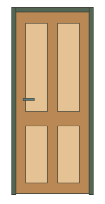
Et besøg i Odense
Lyset fra vinduet falder på skrå hen over en lys fyldningsdør. Nederst på bladet kan man tælle to korte felter, øverst to lange. På Øllgaards fotografi står døren mellem et værelse og en stue i Det Genanvendte Hus i Odense. Huset med de 14 lejligheder blev opført i årene 1991–1993. Da døren blev sat i, havde den allerede tjent i en anden bygning.
På billedet ved siden af står døren til et badeværelse på klem. Den har også fyldninger. Læg især mærke til, hvad billederne ikke røber ved første blik. De gamle døre kom med karme, mens beslag, låsekasser og greb blev fornyet. Et nyt greb kan altså godt sidde på en gammel dør i et hus, der er yngre end døren selv.
Her begynder vores tur. Vi følger Odenses døre så langt, som besigtigelsen rækker. Ved arbejdsbordet bagefter tager to tegnede prøveblade over. Dem kan vi måle og vende, som vi vil.
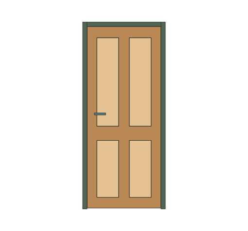
En nytegnet fyldningsdør med fire felter som på foto 41. Ådring, nøglegreb og profilering er udeladt. Fotografierne af begge døre findes på PDF-side 22 i tilstandsvurderingen.
Luk en dør op og lad hånden blive på grebet. Det, der svinger med, er dørbladet. Den faste ramme i væggen er karmen. Rundt om den løber ofte en indfatning, som dækker fugen ind mod væggen. Allerede her kan et lille ord som »dør« skabe besvær. Bygherren har set et helt parti. På lageret står måske kun bladet.
De indvendige fyldningsdøre i Odense blev taget fra bygninger, der blev skilt ad. Både blad og karm fik et nyt hjem. Netop karmen er værd at dvæle ved. Den kan have bevaret hængslernes indbyrdes afstand, pladsen til låsens falle og det lille trin, bladet lukker ind imod. Falden er den bevægelige del, der tager fat, når døren lukker.
Når et tilbud om en genbrugsdør dukker op, så bed om et billede med bladet på klem. På ét billede kan man se, hvilke dele der findes, og hvilke spørgsmål næste besøg skal afklare.
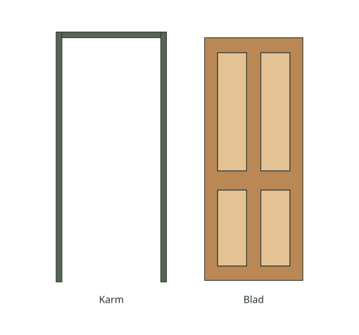
Til venstre den faste karm, til højre bladet. Begge hører til vores prøve. Indfatningen ville fortsætte ud på vægfladen og er udeladt på tegningen.
Læg et blad på en skitse, som om du så det lige forfra. Skriv »top« ved overkanten og sæt et mærke ved hængselsiden. Først nu tager vi målene frem. Er kanten slidt lokalt, kan to personer få forskellige tal, selv om begge har aflæst tommestokken rigtigt. Med en skitse kan de vise hinanden, hvor de stod.
På prøvebladet måler vi bredden øverst, midt på og nederst. Vi tager højden langs begge sider og tykkelsen ved en fri kant. Vi tegner også et snit ved kanten. En liste eller en fals kan være det yderste punkt på forsiden, mens bagsiden slutter lidt længere inde. Før målene ind på netop den side af snittet, de tilhører.
Karmens udvendige bredde får sin egen målpil. Når en kollega senere fortæller, at åbningen er bred nok, kan du spørge: Bred nok til selve bladet, til karmen, eller til at få hele sættet på plads i væggen?
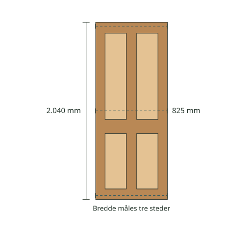
De tre stiplede linjer går mellem bladets yderkanter i forskellige højder. Stregen til venstre angiver bladets højde. Karmen indgår ikke i bladets mål.
Gå tæt på den kant af døren, der forsvinder ind mod karmen, når man lukker. På den ene prøve er kantens omrids et rektangel. På den anden er der skåret et trin i træet. Det fremspringende stykke kan dække en del af samlingen mellem blad og karm. Fra stuen ser man måske bare en smal skygge langs kanten.
På tavlen ligger to små tværsnit, begge af blade på 40 mm i tykkelsen. Se på det højre. Den yderste læbe går 12 mm længere ud end fladen bagved. I de bageste 14 mm af tykkelsen er træet trukket tilbage. Det er eksempelmål, valgt så forskellen kan ses med det blotte øje.
Tegn karmens anslag med på din egen skitse, før du bestiller tilpasning. Anslaget er den flade, som standser bladet. Der kan være plads til forsiden og alligevel være træ i vejen bagved. Et lille snit overbeviser hurtigere end en hel side med ydermål.
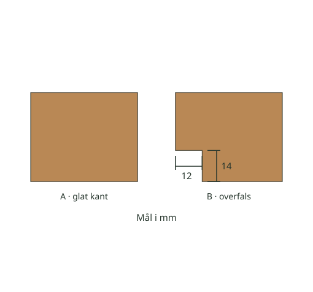
Kantprøve A har glat kant. B har overfals. Udsnittene viser samme tykkelse og er tegnet i samme forstørrelse. De to profiler er undervisningseksempler.
Nu begynder en ny prøve. Vi stiller to dørblade med glatte kanter op ved siden af hinanden. De er begge 825 mm brede, 2.040 mm høje og 40 mm tykke. De har samme hængselside, og de fire fyldninger sidder ens. På en oversigt over ledige materialer kunne de sagtens have stået på samme linje.
Vend den smalle kant med beslagene ind mod lyset. Midten af det nederste hængsel sidder 1.740 mm under bladets overkant på begge blade. Foroven er der derimod en forskel. På A sidder midten 200 mm nede. På B er den rykket til 240 mm. Hængslerne i prøven har samme type og længde.
Det her er vores egne to blade. Ingen har målt disse afstande i lejlighederne i Odense. Netop derfor kan vi tillade os at gøre forsøget så rent: Vi har flyttet én eneste ting. Hvor løber vi ind i den, når bladet kommer hen til karmen?
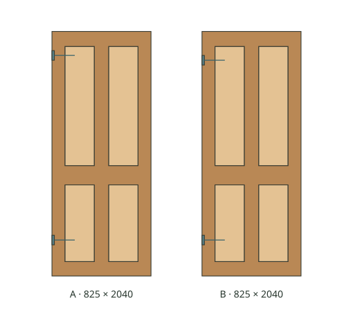
Prøve A og B i samme målestok. De små blågrønne beslag sidder på samme side. Begge underste hængsler står i samme højde. Se de to øverste på næste tavle.
Sæt en streg ud for den højde, hvor bladets overkant skal være, når døren er lukket. Den streg bliver fælles nul på karmen og begge prøveblade. Det er her, målingen begynder. Tog vi i stedet karmen helt oppe fra overkanten af dens træ, ville karmstykkets tykkelse være blevet lagt til det ene mål.
Karmen er lavet til A. Begynd ved det nederste hængsel og følg blikket opad. Ved den øverste streg falder midten af karmens beslag og midten af A’s beslag ud for hinanden. Stil nu B ved samme nul. Dets øverste beslag sidder 40 mm for langt nede. Hæver vi hele B de 40 mm, passer det øverste mærke, men det nederste kommer ud af stilling.
Det er en af de billigste opdagelser i bogen. Den kræver hverken en ny karm eller et eneste skruehul. To streger og en fælles overkant var nok til at vælge A til den videre pasningsprøve.
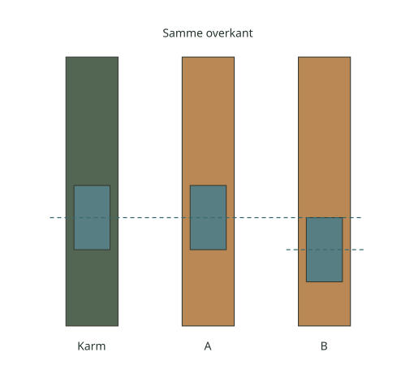
Øverste beslag i nærbillede. Den lange stiplede linje forbinder centrene ved 200 mm. Den korte linje viser B ved 240 mm. Karmens viste overkant er her bladets nulmærke.
En dør kan også have de rigtige hængsler og stadig binde. Læg mærke til den tynde stribe lys langs bladets overkant. Er striben smal oppe i det ene hjørne og bred i det andet, har du et godt sted at begynde en undersøgelse. Selve lysstriben fortæller endnu ikke, om fejlen ligger i bladet, hængslet eller karmen.
Se på de to åbninger på tavlen. Den venstre er retvinklet. På den højre har vi forskudt bunden til siden og ladet bredden være den samme foroven og forneden. Mål tværs gennem den tomme åbning fra hjørne til hjørne i begge retninger. Først i det skæve eksempel giver diagonalerne forskellige tal.
I et hus kan karmen også vride sig ud af det plan, du har tegnet. Derfor må man se langs den og undersøge den i dybden. En god opmåling slutter med et spørgsmål, man faktisk kan gå tilbage og besvare på stedet.
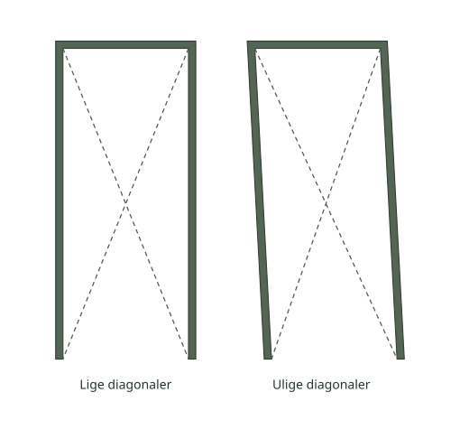
Samme åbningsbredde i to stiliserede karme. Højre karms skævhed er gjort tydelig for at vise virkningen på diagonalerne. Den viser ingen bestemt dør i Odense.
Så længe en dør sidder i huset, ved alle, hvor den hører til. Går den gennem tre hænder på vej til et nyt hus, kan den viden forsvinde på en eftermiddag. Vi giver prøvedøren nummer 03. Før arbejdet begynder, får karm og blad samme nummer på registreringen. Et foto fra hvert rum viser hængselside, åbneretning og gulvet under døren.
Snedkeren kan vurdere, hvilke dele der tåler at blive taget ud, og hvad der holder karmen i væggen. Hvis overflader og tilstødende materialer kræver miljøundersøgelse, hører den til inden arbejdet. I Odense rejste blad og karm sammen, men der kom nye greb, låsekasser og beslag til. I vores prøve regner vi også på muligheden for at tage beslagene med.
Lægger man et beslag til side, er en seddel med »gammelt hængsel« hurtigt glemt. »03, øverst, karmside« lader en anden person finde tilbage til både delen og dens plads.
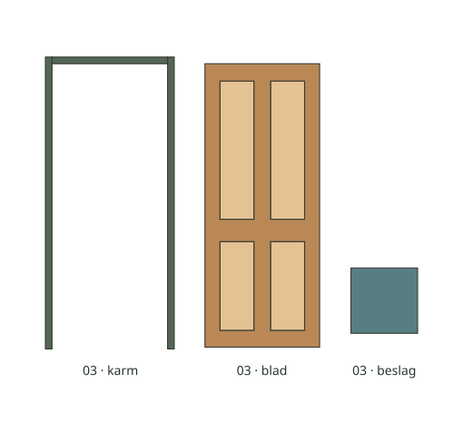
Nummer 03 følger karm, blad og beholderen med beslag. Det er en registreringsøvelse. I Odense blev de indvendige døre faktisk forsynet med nye beslag.
Tegn den nye åbning med gangen på den ene side og værelset på den anden. På en plantegning fylder en lukket dør ikke meget mere end en streg. Men det er ude i rummet, man skal leve med den. Sæt blyanten ved hængslet og følg den yderste kant hele vejen rundt til åben stilling.
I prøverummet står et lavt skab. Der er plads til at tegne døren både lukket og helt åben. Undervejs svinger bladet gennem det sted, hvor skabet står. Den ene pæne tegning kunne derfor aldrig blive til den anden. Det er lige netop mellemstillingerne, der gør dette til en prøve.
Skal en eksisterende dør flyttes til værelset, er en skitse af møblerne lige så vigtig som hængselsiden. Vis, hvor en hånd skal kunne nå grebet, og hvor et menneske skal kunne stå og dreje med bladet. Tag også den daglige rute med, når I vælger mellem to lignende døre.
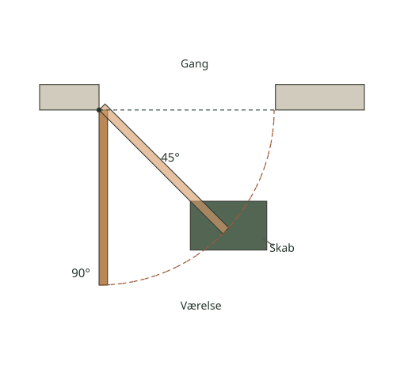
Plan over et tænkt rum. Den stiplede streg viser lukket stilling og den stiplede bue dørkantens sving. Skabet står inde i det felt, bladet skal passere gennem.
Lad blikket falde til dørens nederste kant. Da åbningen blev målt, lå der måske et gammelt gulv. Når døren skal hænges op, har rummet fået en ny belægning. Selv om hængslerne sidder præcis som før, begynder det færdige gulv nu et andet sted i højden.
På venstre snit har prøvebladet 5 mm fri afstand til gulvet. På det højre har vi føjet et 7 mm tykt lag til ved samme placering af bladet. Forskellen er lille nok til, at den er let at overse fra gangen. På snittet går træ og ny belægning 2 mm ind i hinanden. Den stilling kan døren ikke indtage i virkeligheden.
De 5 og 7 mm er vores valgte regneeksempel. Tag en rigtig dør gennem hele åbningsfeltet ved det færdige gulv. Det højeste sted kan ligge et stykke fra karmen. Først når stedet er fundet, giver det mening at afgøre, hvad der skal tilpasses.
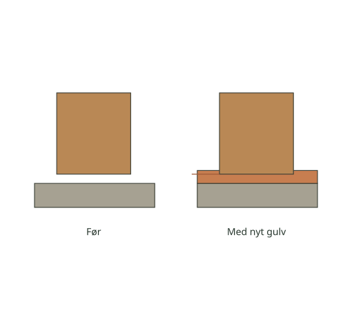
Samme underkant før og efter et nyt gulvlag. Den højre tegning viser en tilsigtet geometrisk kollision. Prøvens 2 mm er ingen anbefalet frigang.
Forestil dig, at prøveblad A nu bliver tilbudt til et helt andet sted, hvor døren skal hamle op med brand eller røg. Vi ved, at målene passer til vores prøve. Det siger noget om hængslerne. Resten af spørgsmålet følger med den nye placering og de egenskaber, som projektet kræver dér.
Se på snittet langs kanten. Bladet lukker mod en karm, en tætning ligger i mellemrummet, og karmen forbindes videre til væggen. Beslag og lukning hører også til det samlede dørparti. Den projektansvarlige må sammen med den brandfaglige rådgiver afklare, hvilken dokumentation der er nødvendig for netop den sammensætning og placering.
DBI og samarbejdspartnere installerede tre brugte branddøre som demonstration i projekt TRÆ. Deres projektbeskrivelse understreger, at demonstrationen ikke leverer færdiggodkendte produkter. Vil du lære af forsøget, er spørgsmålet derfor, hvordan dørene blev udvalgt og vurderet. Et foto af en lignende dør giver ikke samme svar.
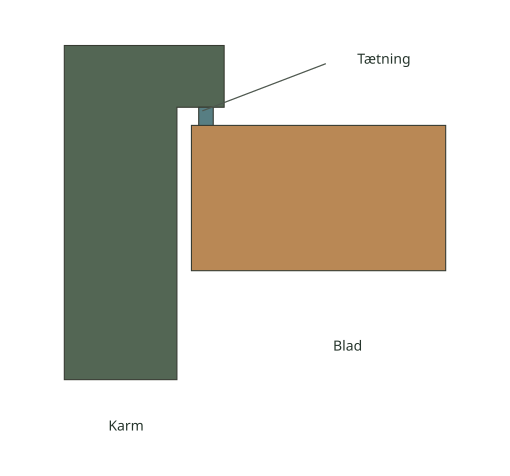
Principsnit i blad, karm og tætning. Tegningen viser, hvilke dele man skal tale om. Der er ikke tilknyttet en brand- eller røgklassifikation til bogens model.
På bordet ligger en låsekasse og et hængsel. Ved siden af et helt dørblad fylder de forsvindende lidt. Alligevel kan de vende op og ned på forklaringen i et klimaregnskab. Ét sted dukker tallet 80 procent op i forbindelse med genbrug af indvendige døre. Hvilken dør og hvilken sammenligning gemmer sig i det tal?
I det danske dialogværktøjs eksempel bliver metalbeslagene brugt igen. Forfatterne peger på det genbrugte metal som den væsentlige forskel i deres sammenligning med en ny dør. I Odense var historien en anden. Der blev brugt gamle blade og karme, og huset fik nye beslag, låsekasser og greb. De to fortællinger kan begge være rigtige samtidig.
Vil du regne på et tredje hus, så læg dets stykker på bordet først. Hvilken ny dør ville ellers være blevet købt? Hvilke gamle dele går med videre? Hvad skal tilføres, transporteres og repareres? Så får beregneren en virkelig opgave og et bedre udgangspunkt end et lånt procenttal.
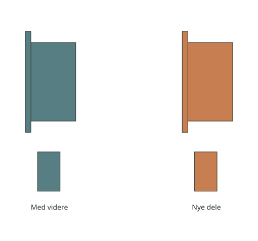
Til venstre et scenarie med genbrugte metaldele. Til højre samme slags dele anskaffet på ny. Figuren viser forskellen i forudsætninger. Der er ikke beregnet et klimaaftryk for Odenses døre.
Vend tilbage til den lyse dør. Da huset i Odense blev besigtiget i 2021, kunne man stadig se de gamle fyldningsdøre i brug. De fremstod generelt pæne. Flere steder bandt de også. Begge dele er værd at skrive ned om en dør. Farven og fyldningerne ser man fra stolen. Om den binder, mærker man, når man går gennem rummet.
Undersøgelsen vurderer, at den slags problemer også kan optræde i tilsvarende byggeri med nye materialer. Den angiver ikke, hvorfor en bestemt dør gik trægt. På vores tegning står derfor to spørgsmål ved hvert sit sted. Er der kontakt oppe i hjørnet? Er der bevægelse ved hængslet?
Når døren afleveres, kan den næste få mere med end nummeret på det rum, den sidder i. Giv vedkommende skitsen af blad og karm, billederne af beslagene og et notat om, hvordan døren gik ved afleveringen. Om mange år står et andet menneske måske med hånden på det samme greb. Så har det menneske et sted at begynde.
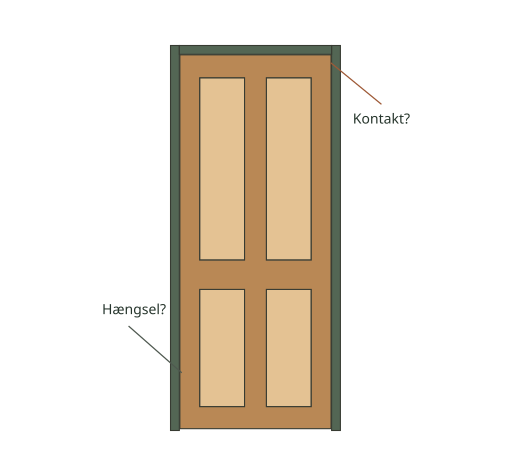
Placering af to mulige observationer på prøvebladet. Eftersynet i Odense konstaterede, at flere døre bandt. Det angiver ingen af disse to steder som årsag.